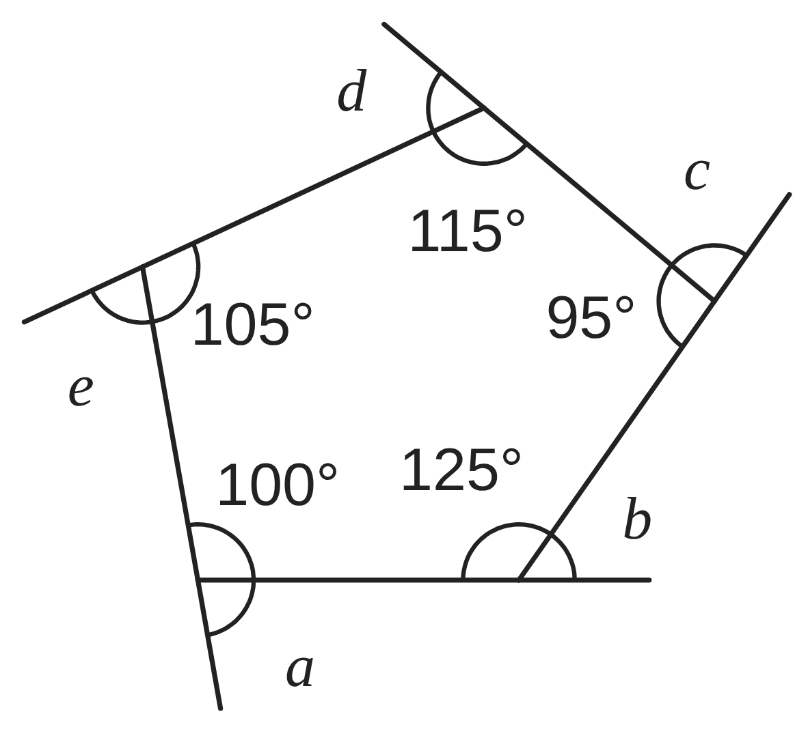
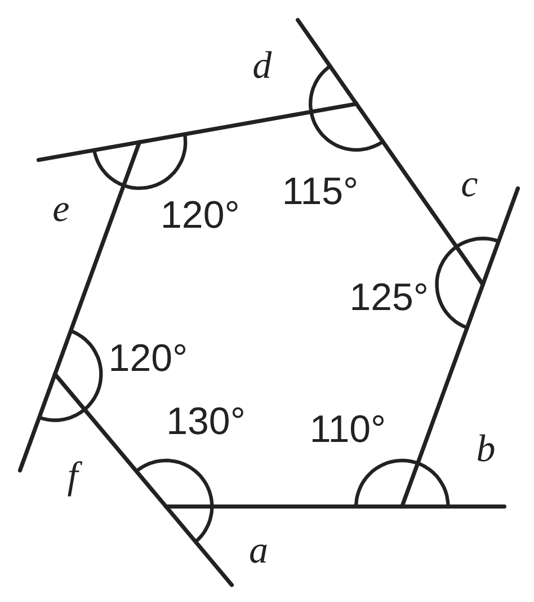
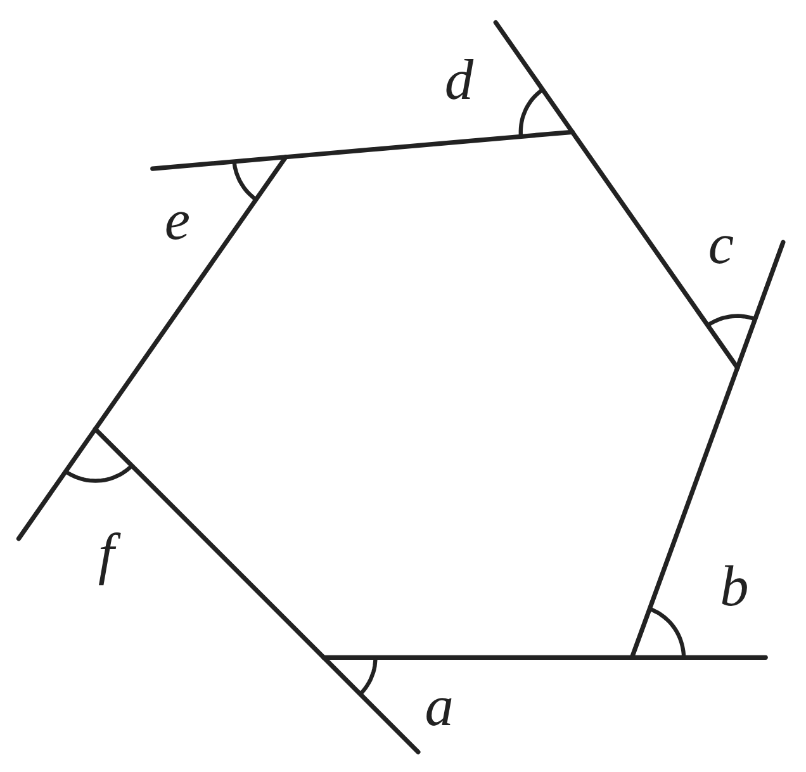

ペア学習
第6時 多角形の外角の和は、何度になるだろう
前の時間の重要語句を、ペアで出し合おう
第5時の重要語句から、1人1問ずつ、言葉を選んで出題する。
聞かれた人は、その言葉の意味を、自分の言葉で言う。
内角
対角線
n角形の内角の和
正多角形
平行と合同 第6時 多角形の外角の和は、何度になるだろう
めあて
第6時 多角形の外角の和は、何度になるだろう
多角形の外角の和は、何度になるだろう
学習課題
下の図は、五角形と六角形の、各頂点で外角を1つずつとったものである。内角の大きさは、図に書いてある。
それぞれの外角の大きさを求めて、外角の和を求めよう。


平行と合同 第6時 多角形の外角の和は、何度になるだろう
学習課題のまとめ
第6時 多角形の外角の和は、何度になるだろう

五角形
a＝180°−100°＝80° b＝180°−125°＝55°
c＝180°−95°＝85° d＝180°−115°＝65°
e＝180°−105°＝75°
外角の和 80°+55°+85°+65°+75°＝360°

六角形
外角は 50°、70°、55°、65°、60°、60°
外角の和 50°+70°+55°+65°+60°+60°＝360°
平行と合同 第6時 多角形の外角の和は、何度になるだろう
ことば
第6時 多角形の外角の和は、何度になるだろう
多角形の1つの辺をのばしたとき、のばした辺と、
となりの辺がつくる角を、その頂点の という。
どの頂点でも、内角と外角の和は である。
多角形の外角の和は、何角形でも である。
正n角形の1つの外角の大きさは、 である。
平行と合同 第6時 多角形の外角の和は、何度になるだろう
ことば
第6時 多角形の外角の和は、何度になるだろう
多角形の1つの辺をのばしたとき、のばした辺と、
となりの辺がつくる角を、その頂点の外角という。
どの頂点でも、内角と外角の和は 180° である。
多角形の外角の和は、何角形でも 360° である。
正n角形の1つの外角の大きさは、360°÷n である。
平行と合同 第6時 多角形の外角の和は、何度になるだろう
例題
第6時 多角形の外角の和は、何度になるだろう
次の問いに答えよう。
（1）正 角形の1つの外角と、
1つの内角の大きさを求めよう。
（2）1つの外角が ° である正多角形は、正何角形だろう。
平行と合同 第6時 多角形の外角の和は、何度になるだろう
例題 解答
第6時 多角形の外角の和は、何度になるだろう
（1）正十二角形の1つの外角と内角
外角 … 360°÷12＝30°
内角 … 180°−30°＝150°
（2）1つの外角が 40° の正多角形
360°÷40°＝9
正九角形
平行と合同 第6時 多角形の外角の和は、何度になるだろう
考えよう
第6時 多角形の外角の和は、何度になるだろう
どんな多角形でも、外角の和が、いつも 360° になるのは、なぜだろう。
①
式で説明しよう。n角形で、「内角と外角の和」に目をつけて、外角の和を n を使った式で表し、360° になるわけを説明しよう。
②
動きで説明しよう。多角形のまわりを、1周歩くとき、それぞれの頂点で向きを変える角度は、どの角にあたるだろう。そこから、外角の和が 360° になるわけを説明しよう。

発展
解き終わった人は、考えてみよう。
正n角形の1つの内角の大きさが、整数の度になるのは、n がどんな数のときだろう。
平行と合同 第6時 多角形の外角の和は、何度になるだろう
振り返り
第6時 多角形の外角の和は、何度になるだろう
今日のめあて
多角形の外角の和は、何度になるだろう
外角
外角の和
正n角形の1つの外角
今日わかったことを、ペアで1つずつ言い合おう。
ワークシートと演習プリントを出そう。（未完成でも出す）
平行と合同 第6時 多角形の外角の和は、何度になるだろう